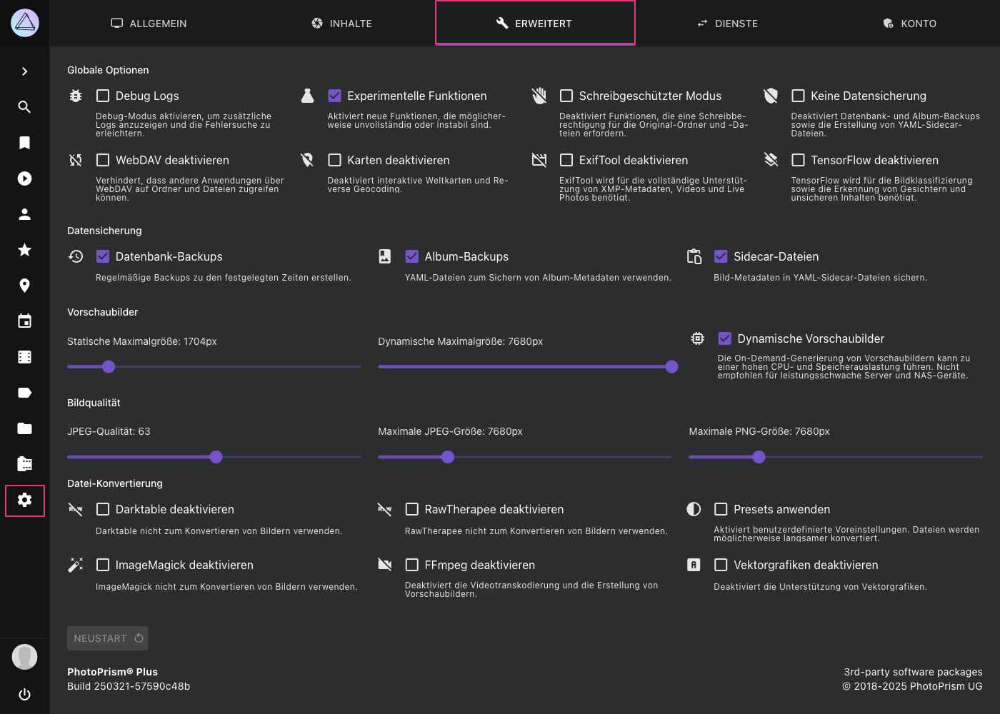

Erweiterte Einstellungen¶
Systemkonfigurationsoptionen wie die Bildqualität können in den erweiterten Einstellungen geändert werden. Du kannst auch bestimmte Funktionen deaktivieren und den Debug- oder schreibgeschützten Modus aktivieren.
Da diese Einstellungen ohne Authentifizierung nicht sicher sind, sind sie nicht verfügbar, wenn du PhotoPrism im public Modus verwendest. Das Ändern von Konfigurationsoptionen ist weiterhin über Konfigurationsdateien und Befehlsparameter möglich.
Änderungen von erweiterten Einstellungen erfordern immer einen Neustart. Wenn du die Thumbnail-Qualität oder Größen Einstellungen änderst, werden bereits erstellte Thumbnails nicht gelöscht. Thumbnails können über die Kommandozeile neu generiert werden.

Alle Optionen können in deiner docker-compose.yml oder auch über Kommandozeilenparameter gesetzt werden.
Manuell geänderte Werte werden in einer Konfigurationsdatei gespeichert. Sie wird standardmäßig im Ordner storage/config gespeichert.
Gobale Optionen¶
Debug Logs¶
Debug Logs unter Dateien>Logs anzeigen. Änderungen erfordern einen Neustart.
Der entsprechende Konfigurations-Parameter ist PHOTOPRISM_DEBUG.
Expermientelle Funktionen¶
Aktiviert neue Funktionen, an denen derzeit noch entwickelt wird.
Der entsprechende Konfigurations-Parameter ist PHOTOPRISM_EXPERIMENTAL.
Schreibgeschützter Modus¶
Ist diese Option gewählt, können Dateien nicht importiert, über die Benutzeroberfläche hochgeladen oder gelöscht werden.
Der entsprechende Konfigurations-Parameter ist PHOTOPRISM_READONLY.
Keine Datensicherung¶
Diese Option verhindert die Erstellung von Datenbank-, Album- und YAML-Sidecar-Dateisicherungen.
Der entsprechende Konfigurations-Parameter ist PHOTOPRISM_DISABLE_BACKUPS.
WebDAV deaktivieren¶
Deaktiviert den eingebauten WebDAV-Server. Änderungen erfordern einen Neustart.
Der entsprechende Konfigurations-Parameter ist PHOTOPRISM_DISABLE_WEBDAV.
Karten deaktivieren¶
Wenn Karten deaktiviert sind, liest PhotoPrism trotzdem noch Geo-Informationen (Längen- und Breitengrad) aus den Metadaten deiner Dateien aus. Es wird allerding kein Reverse Lookup mehr gemacht, um Informationen über die Orte, der Koordinaten, abzufragen.
Die Karten Ansicht ist nicht sichtbar.
Der entsprechende Konfigurations-Parameter ist PHOTOPRISM_DISABLE_PLACES.
ExifTool deaktivieren¶
Keine JSON-Dateien in storage/sidecar mit ExifTool erstellen.
Beachte, dass du Exiftool aktiviert haben musst, um Videometadaten wie Dauer, Auflösung und Codec zu extrahieren.
Der entsprechende Konfigurations-Parameter ist PHOTOPRISM_DISABLE_EXIFTOOL.
TensorFlow deaktivieren¶
TensorFlow nicht zur automatischen Bild-Kategorisierung und zur Gesichtserkennung verwenden.
Der entsprechende Konfigurations-Parameter ist PHOTOPRISM_DISABLE_TENSORFLOW.
Datensicherung¶
Datenbank Backups¶
Datenbank-Backups werden nach dem konfigurierten Zeitplan erstellt.
Der entsprechende Konfigurations-Parameter ist PHOTOPRISM_BACKUP_DATABASE.
Der Zeitplan sowie die Anzahl der Backups, die aufbewahrt werden, können mittels PHOTOPRISM_BACKUP_SCHEDULE und PHOTOPRISM_BACKUP_RETAIN konfiguriert werden.
Album Backups¶
YAML-Dateien, die die Metadaten von Alben sichern werden nach dem konfigurierten Zeitplan erstellt.
Der entsprechende Konfigurations-Parameter ist PHOTOPRISM_BACKUP_ALBUMS.
Der Zeitplan kann mittels PHOTOPRISM_BACKUP_SCHEDULE konfiguriert werden.
Sidecar Dateien¶
YAML-Dateien, die die Metadaten von Bildern sichern werden erstellt.
Der entsprechende Konfigurations-Parameter ist PHOTOPRISM_SIDECAR_YAML.
Vorschaubilder¶
In diesem Bereich wird festgelegt, wie JPEG-Vorschaubilder und Miniaturansichten gerendert werden. Das sind hochwertige, verkleinerte Versionen deiner Originale.
Vorschaubilder sind notwendig, weil Webbrowser große Bilder nur schlecht an den Bildschirm anpassen können. Die Verwendung von Originalen in voller Auflösung für Diashows und in Suchergebnissen würde außerdem viel Speicherplatz im Browser verbrauchen und die Geschwindigkeit der Indexierung deutlich verringern.
Skalierungsfilter¶
Du kannst den Algorithmus wählen, der verwendet werden soll, um JPEG Vorschaubilder ('Thumbnails') zu erstellen.
Beispiele der verfügbaren Filter findest du im folgenden Abschnitt.
Um einen guten Kompromiss zwischen Qualität und Leistung zu finden, empfehlen wir den Lanczos-Filter. Er ist zwar etwas langsamer bei der Erstellung von Miniaturansichten, erzeugt aber Bilder von sehr hoher Qualität. Im Vergleich dazu kann der weniger anspruchsvolle kubische Filter 30 % schneller sein.
Der entsprechende Konfigurations-Parameter ist PHOTOPRISM_THUMB_FILTER.
Diese Option ist nur verfügbar, wenn PHOTOPRISM_THUMB_LIBRARY in deiner Konfigurationsdatei compose.yaml oder docker-compose.yml auf „imaging“ gesetzt ist.
Statische und Dynamische Maximalgrößen¶
Statische Maximalgröße: Maximalgröße, für Thumbnails, die während des Import- bzw Indexiervorgangs erstellt werden.
Der entsprechende Konfigurations-Parameter ist PHOTOPRISM_THUMB_SIZE.
Dynamische Maximalgröße: Maximalgröße, für Thumbnails, die on demand erstellt werden.
Der entsprechende Konfigurations-Parameter ist PHOTOPRISM_THUMB_SIZE_UNCACHED.
Die Verringerung des statischen Größenlimits hat erhebliche Auswirkungen auf die Ergebnisse der Gesichtserkennung und Bildklassifizierung. Einfach ausgedrückt, bedeutet das, dass der Indexer nicht mehr richtig sehen kann.
Wenn die eingestellte Maximalgröße überschritten wird (z.B. wenn Nutzer einen großen Bildschirm verwenden), und kein Thumbnail in der angefragten Größe vorhanden ist, wird das Originalbild angezeigt. Dies kann dazu führen, dass Bilder in der falschen Orientierung dargestellt werden.
Die Maximalgröße muss mindestens 720px sein, um zu gewährleisten, dass Thumbnails für Farberkennung, Gesichtserkennung, Bildklassifizierung sowie die Ansichten vorhanden sind.
Wir empfehlen eine hohe Maximalgröße. Sollte der von Thumbnails belegte Speicherplatz allerdings ein Problem darstellen, kannst du eine niedrigere statische Maximalgröße einstellen. Setze in diesem Fall eine hohe dynamische Maximalgröße, damit dein Server bei Bedarf Vorschaubilder erstellen kann. Beachte, dass dies eine hohe Rechenleistung erfordert und es zu einer Verzögerung kommen kann, wenn du Bilder im Vollbildmodus betrachten willst.
Falls du im Vollbildmodus deine Originalbilder angezeigt bekommen möchtest, aktiviere Dynamische Vorschaubilder, und setze niedrige dynamische und statische Maximalgrößen (z.B. 720).
Welche Dateien werden von PhotoPrism erstellt?¶
Das kleinste konfigurierbare statische und dynamische Maximalgröße ist 720px, so dass die meisten Größen bis zu fit_720 standardmäßig immer erzeugt werden.
Höhere Maximalgrößen generieren Thumbnails mit mehr Details bei höheren Auflösungen - entweder statisch (vorgeneriert während der Indexierung) oder on demand, wenn die Konfiguration es erlaubt.
Optionale Vorschaubilder können nicht vorgeneriert werden und werden nur auf Anfrage gerendert, z. B. beim Teilen eines Bildes auf Instagram.
Folgende Tabelle listet die verschiedenen Thumbnailgrößen sowie ihre Anwendung:
| Name | Width | Height | Aspect Ratio | Available | Usage |
|---|---|---|---|---|---|
| colors | 3 | 3 | 1:1 | Always | Color Detection |
| tile_50 | 50 | 50 | 1:1 | Always | List View |
| tile_100 | 100 | 100 | 1:1 | Always | Places View |
| left_224 | 224 | 224 | 1:1 | On-Demand | AI |
| right_224 | 224 | 224 | 1:1 | On-Demand | AI |
| tile_224 | 224 | 224 | 1:1 | Always | AI, Mosaic View |
| left_384 | 384 | 384 | 1:1 | Optional | AI |
| right_384 | 384 | 384 | 1:1 | Optional | AI |
| tile_384 | 384 | 384 | 1:1 | Optional | AI |
| left_480 | 480 | 480 | 1:1 | Optional | AI |
| right_480 | 480 | 480 | 1:1 | Optional | AI |
| tile_480 | 480 | 480 | 1:1 | Optional | AI |
| tile_500 | 500 | 500 | 1:1 | Always | Cards View |
| fit_720 | 720 | 720 | Preserved | Always | SD TV, Mobile |
| tile_1080 | 1080 | 1080 | 1:1 | Optional | |
| fit_1280 | 1280 | 1024 | Preserved | On-Demand | HD TV, SXGA |
| fit_1600 | 1600 | 900 | Preserved | Optional | Social Media |
| fit_1920 | 1920 | 1200 | Preserved | On-Demand | Full HD |
| fit_2048 | 2048 | 2048 | Preserved | Optional | DCI 2K, Tablets |
| fit_2560 | 2560 | 1600 | Preserved | On-Demand | Quad HD |
| fit_3840 | 3840 | 2400 | Preserved | Optional | 4K Ultra HD |
| fit_4096 | 4096 | 4096 | Preserved | On-Demand | DCI 4K, Retina 4K |
| fit_5120 | 5120 | 5120 | Preserved | On-Demand | Retina 5K |
| fit_7680 | 7680 | 4320 | Preserved | On-Demand | 8K Ultra HD 2 |
Die Thumbnails werden in storage/cache/thumbnailsgespeichert. Der genaue Pfad ist abhängig von Thumbnail-Größe und Hash der Originaldatei z.B.
storage/cache/thumbnails/1/a/3/1a30c1f...9_100x100_center.jpg
Dynamische Vorschaubilder¶
Vorschaubilder können on-demand erstellt werden, also erst, wenn sie gebraucht werden. Dies ist beispielsweise beim Betrachten der Bilder der Fall. Das spart Speicherplatz, ist aber rechenintensiver und wird daher nicht empfohlen, wenn du auf weniger leistungsfähigen Geräten (wie dem Raspberry Pi) arbeitest.
Der entsprechende Konfigurations-Parameter ist PHOTOPRISM_THUMB_UNCACHED.
Bildqualität¶
JPG Qualität¶
Um Thumbnails in bestmöglicher Qualität zu erhalten, solltest du die JPEG-Qualität auf ein Minimum von 90 einstellen. Generell gilt: je höher die Qualität, desto mehr Speicherplatz brauchen die Thumbnails und desto länger dauert die Generierung.
- Qualitäts-Level von >90% werden als hoch eingestuft.
- 80%-90% gilt als mittlere Qualität
- 70-80% gilt als niedrige Qualität (z.B. stark komprimierte Bilder auf Social Media).
Alles mit einer Qualität von unter 70% gilt als sehr niedrig.
Beispiel: Bei einer JPEG-Qualität von 95 sind die Vorschaubilder ca 500kB groß. Bei einer Qualität von 80 ist die Größe auf ca 100kB reduziert.
Das Qualitätsempfinden hängt stark davon ab, wie viele Informationen ein Bild enthält. Leere Flächen oder Himmel, lassen sich leicht komprimieren. Während Bilder mit vielen Details am meisten unter der Komprimierung leiden. Deshalb wirkt sich eine Verringerung der Qualität der Thumbnails auch negativ auf die Ergebnisse der Gesichtserkennung und Bildklassifizierung aus.
Der entsprechende Konfigurations-Parameter ist PHOTOPRISM_JPEG_QUALITY.
Maximale JPEG-Größe¶
Hiermit wird die maximale Größe der JPEG-Dateien festgelegt, die bei der Umwandlung von Original-RAW-Bildern erstellt werden.
RawTherapee und "heif-convert" können die Auflösung von JPEG-Dateien nicht begrenzen , wenn sie Dateien aus anderen Formaten wie RAW, DNG, HEIC oder AVIF konvertieren.
Der entsprechende Konfigurations-Parameter ist PHOTOPRISM_JPEG_SIZE.
Maximale PNG Größe¶
Hiermit wird die maximale Größe der PNG-Dateien festgelegt, die bei der Umwandlung von Original-Dateien erstellt werden.
Der entsprechende Konfigurations-Parameter ist PHOTOPRISM_PNG_SIZE.
Dateikonvertierung¶
Viele Fotografen, insbesondere Nutzer einer digitalen SLR, verwenden ein verlustfreies RAW-Format anstelle des verlustbehafteten JPEG-Formats. Es gibt auch Handies, die RAW-Daten abspeichern können oder das Format HEIC/HEIF nutzen.
Unser Ziel ist eine umfangreiche Unterstützung für alle RAW-Formate, unabhängig vom verwendeten Kameramodell. Deshalb bitten wir dich uns eine Nachricht zu schicken, falls du ein Problem mit den Dateien von einem deiner Geräte hast.
Webbrowser können keine RAW-Formate anzeigen. Deshalb muss PhotoPrism diese Dateien zu JPEGs konvertieren. Falls du das nicht möchtest, kannst du das in den Einstellungen ausschalten.
Zusätzlich zu den oben genannten Formaten unterstützt PhotoPrism auch BMP-, GIF-, PNG- und TIFF-Dateien. Bevor du diese Formate zur Speicherung nutzt, solltest du bedenken, dass diese oft keine Metadaten speichern können. Deshalb werden sie in der Regel für Screenshots, Diagramme und Icons verwendet.

Von PhotoPrism erstellte Sidecar-Dateien werden außerhalb des Originals Verzeichnis gespeichert, so dass die RAW zu JPEG Konvertierung auch im Read-Only Modus verfügbar ist.
Darktable deaktivieren¶
Wenn diese Funktion deaktiviert ist, wird Darktable nicht für die RAW-Konvertierung verwendet.
Der entsprechende Konfigurations-Parameter ist PHOTOPRISM_DISABLE_DARKTABLE.
RawTherapee deaktivieren¶
Wenn diese Funktion deaktiviert ist, wird RawTherapee nicht für die RAW-Konvertierung verwendet.
Der entsprechende Konfigurations-Parameter ist PHOTOPRISM_DISABLE_RAWTHERAPEE.
Presets anwenden¶
Aktiviert Benutzerdefinierte Voreinstellungen. Dateien werden möglicherweise langsamer konvertiert.
Der entsprechende Konfigurations-Parameter ist PHOTOPRISM_RAW_PRESETS.
FFmpeg deaktivieren¶
Wenn diese Funktion deaktiviert ist, wird FFmpeg nicht zum Transkodieren von Videos oder zum Extrahieren von Standbildern für die Erstellung von Vorschaubildern verwendet, und das Indexieren oder Importieren von Videodateien ist nicht möglich.
Der entsprechende Konfigurations-Parameter ist PHOTOPRISM_DISABLE_FFMPEG.
Um zu verhindern, dass unerfahrene Benutzer versehentlich die Erstellung von Vorschaubildern für Videos deaktivieren, kann FFmpeg nur deaktiviert werden, wenn Experimentelle Funktionen aktiviert sind.
ImageMagick deaktivieren¶
Wenn diese Funktion deaktiviert ist, wird ImageMagick nicht für die Konvertierung verwendet.
Der entsprechende Konfigurations-Parameter ist PHOTOPRISM_DISABLE_IMAGEMAGICK.
Vektorgrafiken deaktivieren¶
Deaktiviert die Unterstützung von Vektorgrafiken.
Skalierungsfilter Beispiele¶
Originalbild:

Dieses Bild wurde unter der Verwendung von verschiedenen Filtern von 600x400 Pixeln auf 150x100 Pixel skaliert. Die Liste ist sortiert nach Rechengeschwindigkeit.
An erster Stelle steht der schnellste Filter mit der niedgrigsten Qualität, an letzer Stelle der langsamste Filter mit der besten Qualität.
| Filter | Ergebnis |
|---|---|
| Nächster Nachbar | |
| Bilinear |  |
| Bikubisch (Scharf) | |
| Lanczos |  |
Source: A Comparative Analysis of Image Interpolation Algorithms